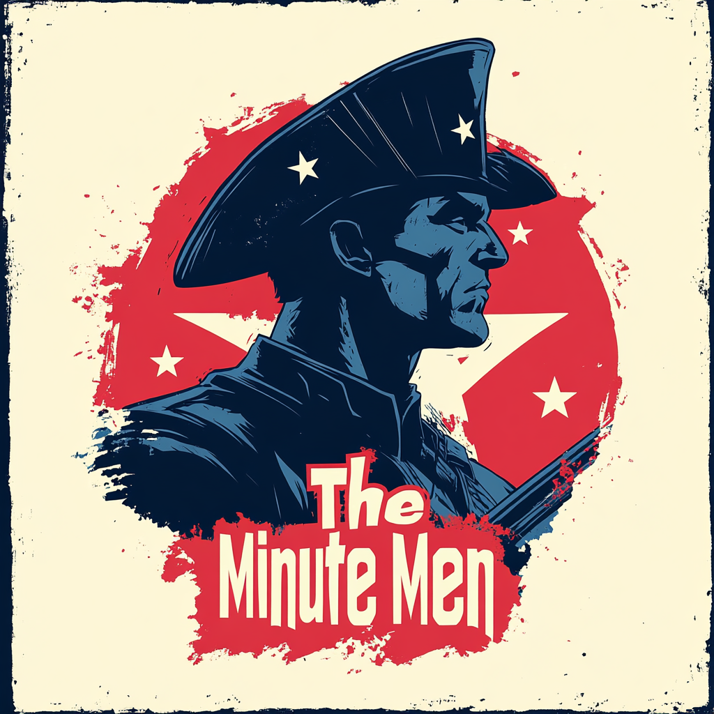

The Minutemen: Boston's Revolutionary Vanguard

Core Philosophy:
The Minutemen embody Boston's revolutionary spirit, standing ready to defend their city at a moment's notice.
Unlike global heroes, their focus is on **neighborhood-level threats**—organized crime, corruption, human trafficking, and local emergencies.
They operate **within the community**, not above it, forging deep connections with the people they protect.
Headquarters: Freedom House
Nestled off the **Freedom Trail**, their base operates behind the facade of a historical society and community center.
Hidden within lies their true operations hub:
Team Dynamics:
Unlike rigid command structures, the Minutemen operate on a **rotating leadership model**, adapting to mission needs.
They rely on a **network of informants, community leaders, and reformed ex-criminals** to stay ahead of threats.
Their funding comes from **private donations and discreet support** from allies in city government.
Core Members:
Beacon (Samuel Revere): The team's strategist and master of perception-based combat.
View RHSAD Profile
| View Heroic Profile
Liberty (Amara Freeman): Front-line fighter with kinetic absorption, a symbol of unyielding justice.
View RHSAD Profile
| View Heroic Profile
Harbormaster (Jackson Nguyen): The guardian of Boston's waterways and an environmental tactician.
View RHSAD Profile
| View Heroic Profile
Greenway (Darius Greene): Urban botanist, healer, and environmental warrior.
View RHSAD Profile
| View Heroic Profile
Marathon (Elena Pappas): The high-speed response specialist, able to be anywhere **before the crisis begins**.
View RHSAD Profile
| View Heroic Profile
Common Tactics:
Allies and Rivals:
The Minutemen maintain ties with the **Boston Avengers Academy** and trusted figures in **law enforcement**.
They collaborate with **community leaders** and aid street-level heroes who pass through the city.
Their main adversaries include **corrupt officials, organized crime, and corporate conspiracies**.
Recent Activities:
Public Perception:
The Minutemen are whispered about in the streets—**ghosts of the revolution reborn**.
Some hail them as the **only heroes who truly fight for Boston**, while others call them dangerous vigilantes.
Regardless of the narrative, one thing is clear: **when Boston needs them, the Minutemen stand ready**.